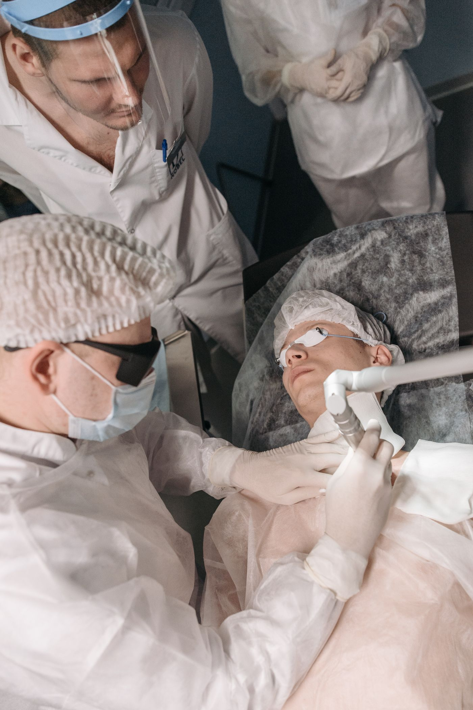
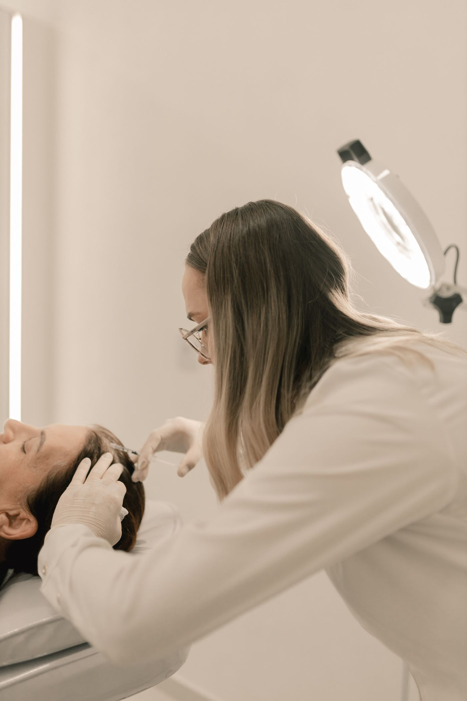
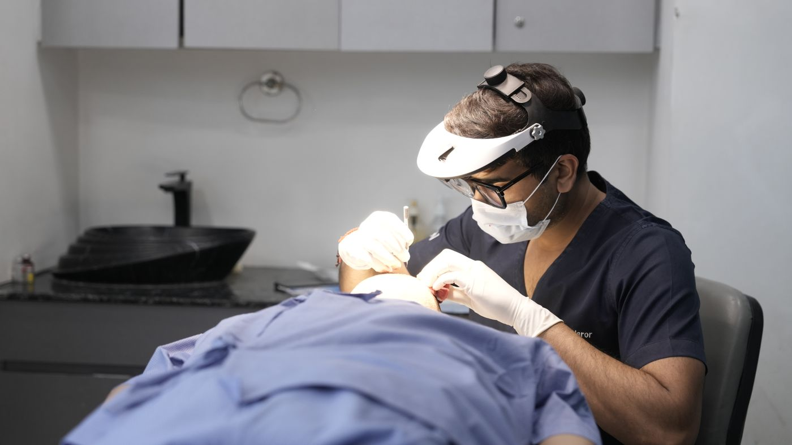

Pico Genesis เข้าใหม่
สหรัฐอเมริกา · เข้าคลินิก ก.พ. 2569
พลังงานสั้นระดับหนึ่งในล้านล้านวินาที เม็ดสีจึงแตกด้วยแรงสั่นก่อนที่ความร้อนจะกระจายไปถึงผิวรอบข้าง คนผิวแทนจึงมีโอกาสเกิดรอยดำหลังทำน้อยกว่าเลเซอร์รุ่นนาโนวินาที
ความยาวคลื่น 755 นาโนเมตร · ปล่อยพลังงานช่วงพิโควินาที
ใช้กับ ฝ้าตื้น · กระแดด · รอยสัก · จุดด่างดำจากสิว
Potenza RF เข้าใหม่
เกาหลีใต้ · เข้าคลินิก มิ.ย. 2569
เข็มนำคลื่นวิทยุลงไปปล่อยความร้อนที่ชั้นหนังแท้โดยไม่ทำลายผิวชั้นบน แผลจึงอยู่ใต้ผิวและปิดเองภายในสองวัน ระหว่างที่ร่างกายซ่อมแผลเล็กเหล่านั้นมันจะสร้างคอลลาเจนใหม่ขึ้นมาดันก้นหลุม
เข็มไมโครนีดเดิล 49 เข็ม · คลื่นวิทยุแบบ monopolar และ bipolar
ใช้กับ หลุมสิว rolling และ boxcar · รูขุมขนกว้าง · ผิวมัน
Fractional CO₂
เยอรมนี · เข้าคลินิก 2567
เจาะรูเล็กเป็นตารางเว้นเนื้อดีไว้ระหว่างรู ผิวจึงซ่อมจากขอบรูที่ยังสมบูรณ์ เร็วกว่าการลอกทั้งหน้าและเสี่ยงน้อยกว่า
เลเซอร์คาร์บอนไดออกไซด์ 10,600 นาโนเมตร แบบแยกลำเป็นตาราง
ใช้กับ หลุมสิว ice pick ลึก · แผลเป็นจากอุบัติเหตุ
HIFU
เกาหลีใต้ · เข้าคลินิก 2568
ส่งพลังงานข้ามผิวชั้นบนไปโฟกัสที่ชั้นเยื่อพังผืดใต้ผิว ชั้นนั้นหดตัวทันทีและสร้างคอลลาเจนต่ออีกสองถึงสามเดือน กรอบหน้าจึงยกจากข้างในโดยผิวด้านนอกไม่มีแผล
คลื่นเสียงความถี่สูงโฟกัส ระดับความลึก 1.5 · 3.0 · 4.5 มม.
ใช้กับ แก้มตก · กรอบหน้าเบลอ · เหนียงใต้คาง

Pico กับ Q-Switched ต่างกันตรงไหน แล้วฝ้าแบบไหนควรใช้ตัวไหน
ทั้งสองตัวเรียกว่าเลเซอร์ลบเม็ดสีเหมือนกัน แต่กลไกที่ทำให้เม็ดสีแตกคนละเรื่อง และนั่นคือเหตุผลที่ราคาต่างกันเกือบเท่าตัว
Q-Switched ปล่อยพลังงานในช่วงนาโนวินาที เม็ดสีจึงแตกด้วยความร้อนเป็นหลัก ผิวรอบข้างรับความร้อนตามไปด้วย คนผิวแทนจึงมีโอกาสเกิดรอยดำหลังทำมากกว่า
Pico ปล่อยพลังงานสั้นกว่าราวหนึ่งพันเท่า อยู่ในช่วงพิโควินาที เม็ดสีแตกด้วยแรงสั่นสะเทือนก่อนที่ความร้อนจะกระจายออกไปได้ทัน ผิวรอบข้างจึงบอบช้ำน้อยกว่า
ในทางปฏิบัติ ฝ้าลึกที่มีเส้นเลือดร่วมด้วยมักต้องใช้หลายวิธีร่วมกัน ไม่ใช่เลเซอร์ตัวเดียว แพทย์จะส่องผิวด้วยกล้องก่อนเสมอ เพราะฝ้าตื้นกับฝ้าลึกมองด้วยตาเปล่าแยกยาก
เครื่องที่คลินิกใช้: Pico ความยาวคลื่น 755 นาโนเมตร

หลุมสิวเลือก RF Microneedling หรือ CO₂ ดี
คำถามที่ถูกถามบ่อยที่สุดในห้องตรวจ คำตอบขึ้นกับรูปร่างของหลุม ไม่ใช่ความลึกอย่างเดียว
หลุมแบบ rolling ขอบลาด เกิดจากพังผืดใต้ผิวดึงรั้งลงไป ตัวที่ได้ผลคือการตัดพังผืดร่วมกับกระตุ้นคอลลาเจน ไม่ใช่การเจาะผิวชั้นบน
หลุมแบบ ice pick ปากแคบลึกเหมือนถูกแทง ต้องอาศัยการเจาะที่ลงลึกได้จริงอย่าง CO₂ หรือการจี้เฉพาะจุด
คนหนึ่งคนมักมีหลุมมากกว่าหนึ่งชนิดบนหน้าเดียวกัน แผนที่ได้ผลจึงมักเป็นการผสม ไม่ใช่การเลือกอย่างใดอย่างหนึ่ง
แพทย์จะถ่ายภาพแสงข้างก่อนเริ่ม เพื่อใช้เทียบรอบถัดไป

พักฟื้นกี่วัน ถึงกลับไปทำงานได้ตามปกติ
ตัวเลขพักฟื้นที่เขียนไว้ในหน้าโปรแกรมคือช่วงที่ผิวยังมีร่องรอยให้คนอื่นเห็น ไม่ใช่ช่วงที่ห้ามใช้ชีวิต
เลเซอร์ที่ไม่เปิดผิว เช่น Pico หรือ HIFU กลับไปทำงานต่อได้ในวันเดียวกัน แค่หน้าแดงเล็กน้อยช่วงเย็น
เลเซอร์ที่เปิดผิวอย่าง CO₂ จะมีขุยลอกราว 5–7 วัน ช่วงนั้นแต่งหน้ากลบได้ยาก คนส่วนใหญ่จึงนัดทำวันพฤหัสหรือศุกร์
หัตถการที่มีการฉีดอย่าง Subcision มีช้ำเขียวชัดเจน 4–7 วัน ควรเผื่อวันไว้ถ้ามีงานสำคัญ
นัดล่วงหน้าได้ 30 วัน เลือกวันให้พักฟื้นตรงกับวันหยุดได้